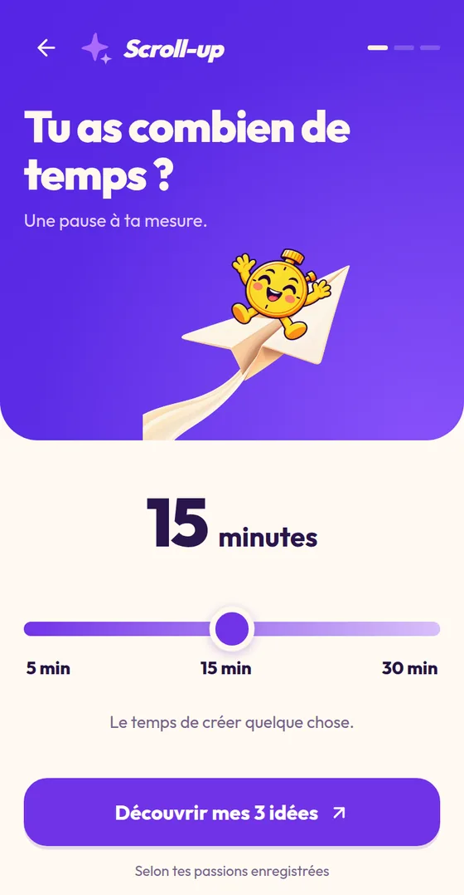
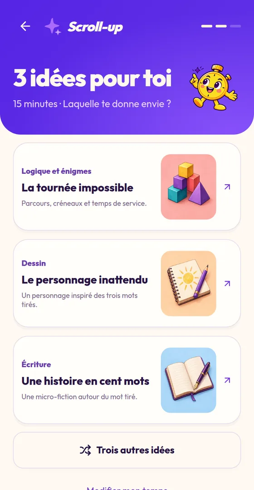
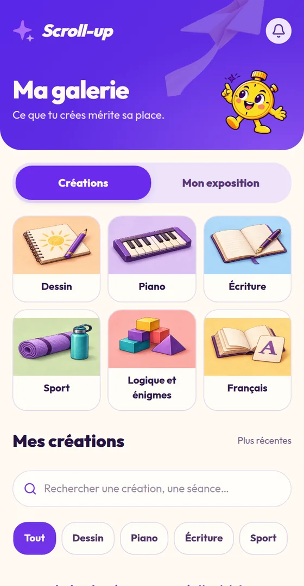

1 minute = 1 minuton
La monnaie de Scroll-up. Tu la gagnes en créant, jamais en regardant.
L’app qui remplace le scroll
Quand l’envie de scroller arrive, Scroll-up te propose mieux : 5, 15 ou 30 minutes pour dessiner, écrire, jouer du piano, bouger ou résoudre une énigme.
Fais le calcul
Réglé sur la moyenne des 15-24 ans qui vont sur les réseaux chaque jour1.
40 jours entiers par an
C’est ce que ça fait sur une année. Et 45 % des ados trouvent déjà qu’ils y passent trop de temps2.
Rends-en juste minutes par jour à Scroll-up :
Essaie, là, maintenant
Ce sont les vraies activités de l’app. Choisis ton temps et ce qui te tente.

Voilà trois idées pour tes 15 minutes. Laquelle te donne envie ?
Dans l’app, Minuton lance ton chrono, te garde la consigne sous les yeux, et ta création rejoint ta galerie à la fin.
La faire dans Scroll-upComment ça marche
5, 15 ou 30 minutes. Ce que tu as devant toi, pas plus. Le chrono s’arrête quand c’est fini, pas de suite automatique.
Trois propositions tirées de tes passions et de ton niveau. Aucune ne te tente ? Trois autres. Et si tu bloques, l’app te donne un coup de pouce.
Ta création rejoint ta galerie, rangée par passion. Tu vois enfin ce que ton temps a produit, et tu gagnes un minuton par minute.
Scroll-up ne bloque aucune app et ne te fait pas la morale. Il te donne autre chose au moment où l’envie arrive.
Six passions
Retourne une carte pour voir une activité et les cinq niveaux à gagner.
Ce que tu y gagnes
La monnaie de Scroll-up. Tu la gagnes en créant, jamais en regardant.
Dépense tes minutons dans la boutique : tenues, ambiances, morceaux de piano, thèmes.
 Artiste40
Artiste40 Pianiste70
Pianiste70 Basket70
Basket70 Foot65
Foot65Ton niveau monte avec le temps passé à créer.
Des ambiances composées pour Scroll-up. Écoute la signature :
Minuton te fait signe à l’heure que tu choisis, une fois par jour au maximum. Tu peux le couper.
Notre histoire
Pendant les vacances, on a regardé notre temps d’écran. TikTok et Instagram nous prenaient des heures chaque jour, et il n’en restait rien.
On ne voulait pas d’une app de plus qui bloque ou qui culpabilise. On voulait l’inverse : qu’au moment où l’envie de scroller arrive, il y ait une vraie alternative, courte, sympa, et qui laisse une trace.
Kenzo & Lukas
Kenzo Becker, fondateur · Lukas Guerrero, co-fondateur
Le test est ouvert
Sur ordinateur ? Scanne avec ton téléphone, l’app est pensée pour lui.
Laisse ton e-mail : on te prévient à la sortie sur l’App Store et Google Play. Rien d’autre.
La liste d’attente ouvre très bientôt.
Oui, pendant toute la phase de test. Plus tard, l’essentiel restera gratuit ; un abonnement, Scroll-up+, ajoutera des parcours avancés et des fonctions en plus.
Pour tester sans rien installer : Scroll-up s’ouvre comme une app, directement dans Telegram. Les versions App Store et Google Play arrivent ensuite.
Non. Scroll-up n’interdit rien. Il te propose une alternative au moment où tu en as envie, et c’est toi qui choisis.
Non. Un papier et un crayon aident pour le dessin, mais tu peux aussi dessiner au doigt. Le piano se joue sur l’écran, le sport se fait sans matériel, et chaque activité dit ce qu’il te faut.
Oui. Pour le piano, l’app te demande ton niveau et part de zéro si besoin. Partout ailleurs, les activités sont courtes et faites pour être réussies.
Scroll-up s’adresse aux 15-35 ans.
Tes créations restent privées, dans ta galerie. Tu peux tout effacer à tout moment depuis les réglages de l’app. Le détail est dans la politique de confidentialité.
Directement dans l’app : un bouton permet d’envoyer tes retours aux créateurs. Pendant le test, chaque message est lu.


